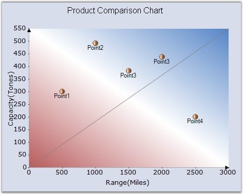

Essential Chart lets you render any data on the chart area. If the built-in features and functionality are not sufficient you can simply draw whatever you want on the chart surface.
You can do so by listening to the ChartAreaPaint event. This event is raised both when a chart is painted as well as when the chart is exported to other image formats, SVG, etc. Remember to do your custom drawing in this event instead of in the Paint event (which will not be called during chart export).
|
[C#]
private void chartControl1_ChartAreaPaint(object sender, PaintEventArgs e) { // Get the right end of the X axis Point ptX = this.chartControl1.ChartArea.GetPointByValue(new ChartPoint(this.chartControl1.PrimaryXAxis.Range.Max, this.chartControl1.PrimaryYAxis.Range.Min));
PointF ptX1 = new PointF(ptX.X - 7, ptX.Y - 4); PointF ptX2 = new PointF(ptX.X, ptX.Y); PointF ptX3 = new PointF(ptX.X - 7, ptX.Y + 4);
// Draws an arrow at the end of the X axis e.Graphics.FillPolygon(Brushes.Black, new PointF[] { ptX1, ptX2, ptX3 });
// Get the top end of the Y axis Point ptY = this.chartControl1.ChartArea.GetPointByValue(new ChartPoint(this.chartControl1.PrimaryXAxis.Range.Min, this.chartControl1.PrimaryYAxis.Range.Max));
PointF ptY1 = new PointF(ptY.X - 4, ptY.Y + 7); PointF ptY2 = new PointF(ptY.X, ptY.Y); PointF ptY3 = new PointF(ptY.X + 4, ptY.Y + 7);
// Draws an arrow at the top of the Y Axis. e.Graphics.FillPolygon(Brushes.Black, new PointF[] { ptY1, ptY2, ptY3 });
// Draws a line through the center of the chart. e.Graphics.DrawLine(Pens.Gray, ptY.X, ptX.Y, ptX.X, ptY.Y); } |
|
[VB.NET]
Private Sub chartControl1_ChartAreaPaint(ByVal sender As Object, ByVal e As PaintEventArgs) ' Get the right end of the X axis Dim ptX As Point = Me.chartControl1.ChartArea.GetPointByValue(New ChartPoint(Me.chartControl1.PrimaryXAxis.Range.Max, Me.chartControl1.PrimaryYAxis.Range.Min))
Dim ptX1 As New PointF(ptX.X - 7, ptX.Y - 4) Dim ptX2 As New PointF(ptX.X, ptX.Y) Dim ptX3 As New PointF(ptX.X - 7, ptX.Y + 4)
' Draws an arrow at the end of the X axis e.Graphics.FillPolygon(Brushes.Black, New PointF() {ptX1, ptX2, ptX3})
' Get the top end of the Y axis Dim ptY As Point = Me.chartControl1.ChartArea.GetPointByValue(New ChartPoint(Me.chartControl1.PrimaryXAxis.Range.Min, Me.chartControl1.PrimaryYAxis.Range.Max))
Dim ptY1 As New PointF(ptY.X - 4, ptY.Y + 7) Dim ptY2 As New PointF(ptY.X, ptY.Y) Dim ptY3 As New PointF(ptY.X + 4, ptY.Y + 7)
' Draws an arrow at the top of the Y Axis. e.Graphics.FillPolygon(Brushes.Black, New PointF() {ptY1, ptY2, ptY3})
' Draws a line through the center of the chart. e.Graphics.DrawLine(Pens.Gray, ptY.X, ptX.Y, ptX.X, ptY.Y) End Sub |

Figure 325: Chart with Custom Drawing - Arrows at the end of the Axes and a Diagonal Line
See Also